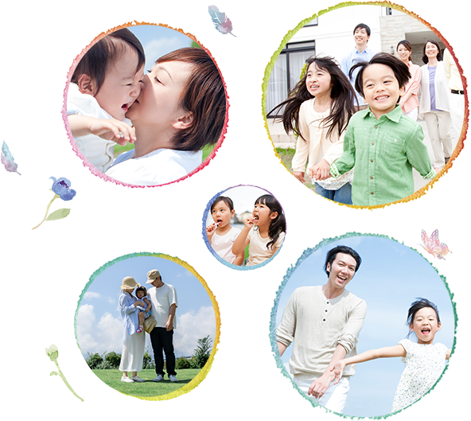
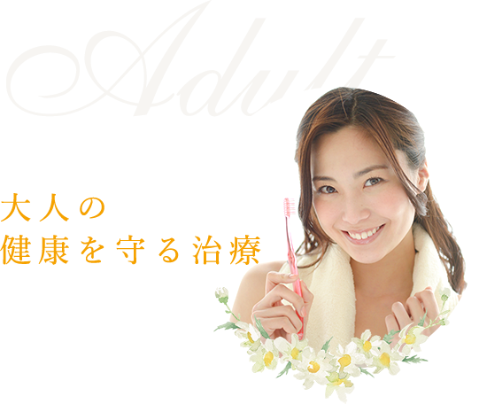
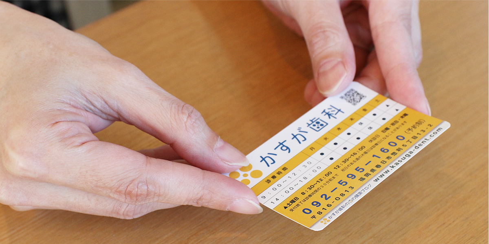

福岡県春日市の歯医者「かすが歯科」のホームページです。


診療のご予約
○平 日：
9:00～12:30／14:00～18:00
○土曜日：
8:30～12:00／12:30～16:00
●休診日：
木曜・日曜・祝日
〒816-0813 福岡県春日市惣利5丁目13-2 MAP

家族みんなの
健康を考える、
歯医者さん
かすが歯科では、一時的な歯の痛みだけを治療するのではなく、
できる限り永続的に、健康な生活をご家族のみなさんが過ごせる
ようしっかりと患者さんの現状や気になる事をカウンセリングし、
断続的に予防治療にも専念していただけるよう取り組んでいます。
大人の治療とお子さまの治療

大人になるとなかなか通院が続かないという方もいらっしゃるかもしれません。
かすが歯科では治療前のカウンセリングを重視していますので、患者さんと一緒に治療計画をしっかりと立てたうえで治療に臨みます、治療のゴールがより明確ですので、一緒に健康な歯を維持していきましょう。
診療メニュー
初めてご来院される方への「カウンセリング」「治療計画」からアフターメンテナンスまで
患者様の口腔環境をサポート致します。
診療時間・ご予約についてのご案内
| 診療時間 | 月 | 火 | 水 | 木 | 金 | 土 | 日 | 祝 |
|---|---|---|---|---|---|---|---|---|
| 9:00～12:30 | 〇 | 〇 | 〇 | ― | 〇 | ▲ | ― | ― |
| 14:00～18:00 | 〇 | 〇 | 〇 | ― | 〇 | ▲ | ― | ― |
▲ 土曜日…8：30~12：00／12：30~16：00 休診日：木・日・祝
住所〒816-0813 福岡県春日市惣利5丁目13-2 MAP

ごあいさつ
福岡県春日市の歯医者「かすが歯科」のホームページにお越しくださり、ありがとうございます。
当院は地域に根差した歯科医院として、そして歯科医療の専門家として、常に患者様の立場に立った診療のご提供に努めています。
「あなたのお口のお悩みは何ですか？」──私たちはまず患者様からこのようなヒアリングを行い、何でも相談しやすい信頼関係を構築します。誰でも生まれ持った歯は失いたくないもの。ですからできるだけ歯を残す治療を目指し、その時にできる最善の治療をご提案します。
ただし、歯の寿命を伸ばすことができる治療であっても、私たち自身や私たちの家族に提供したいと思えない治療は選択しません。歯科のプロとしての知見とこのような患者様の“お口まわりのパートナー”としての視点も大切にし、「本当に必要な治療」と常に向き合います。
さらに、なるべく痛くない治療の提供や衛生管理の徹底により、安心・安全・納得の歯科医療提供に努めます。どうぞどんなお悩みも、私たちにお気軽にご相談ください。